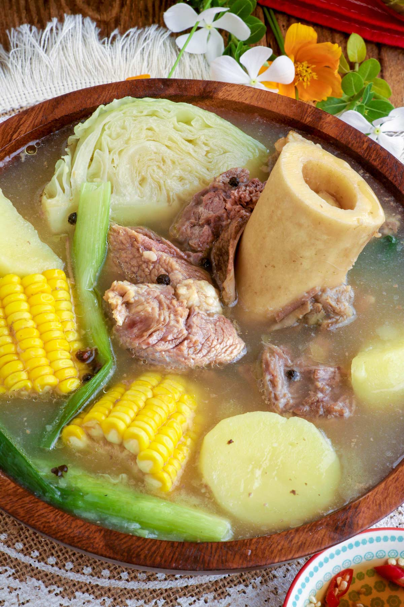

4. Bulalo

Place: Batangas
A warm beef soup made with beef shank, bone marrow, corn, and vegetables. It is popular during rainy or cool weather.
Food trip tip: A comforting meal to share with family or friends.
Food Tripping Guide

Place: Batangas
A warm beef soup made with beef shank, bone marrow, corn, and vegetables. It is popular during rainy or cool weather.
Food trip tip: A comforting meal to share with family or friends.